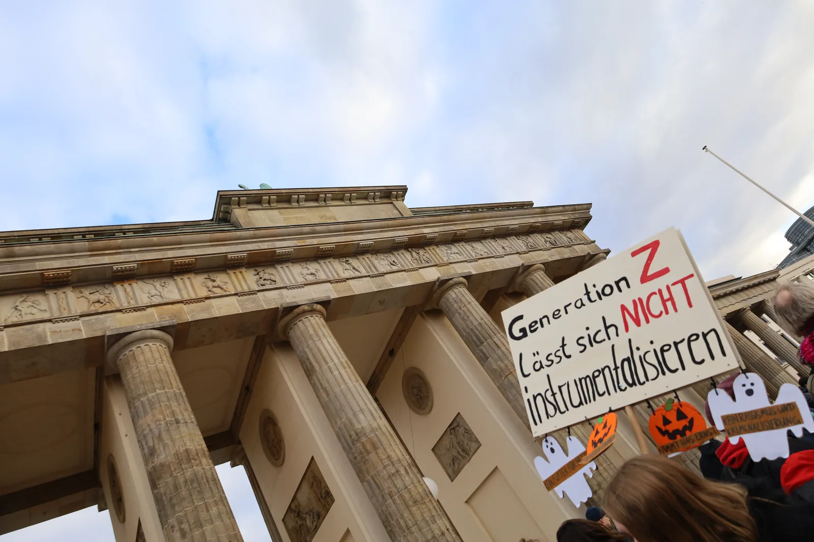

Die Meinungen zu den Protesten gehen stark auseinander. Luisa Neubauer fordert mehr Gehör, Alexander Dobrindt härtere Strafen. Auch in der Union ist seine Wortwahl umstritten.
Über die Sorgen reden oder über die Krawalle?
Nach dem 31. Oktober bestimmen Bilder von Gewalt einen großen Teil der Debatte. Dabei ging es auf den Demonstrationen um bessere Schulen, hohe Lebenshaltungskosten und die Angst vor einer unsicheren Zukunft. Viele Protestierende wollen, dass diese Probleme im Mittelpunkt stehen.
Die Bundesschüler*innenkonferenz teilt Bildungsanliegen, lehnt aber den konkreten Protestaufruf ab. In der Regierung wird über den Umgang mit Gewalttätern und über Dobrindts Wortwahl gestritten. Und zwei Kommentare kommen zu unterschiedlichen Antworten darauf, wie die Bewegung etwas erreichen kann.

Berlin, 31. Oktober 2026: Ein Schild beim Protest von „Gen Z regelt“.Roy Zuo · CC BY-SA 4.0 · Bildquelle · verkleinert.
Die Bevölkerung
Viel Verständnis für die Jugendproteste
Die Proteste stoßen auf deutlich mehr Verständnis, als manche hitzige Debatte vermuten lässt: 83 Prozent der Befragten konnten die Demonstrationen grundsätzlich nachvollziehen. Das ergab eine Forsa-Umfrage im Auftrag von stern und RTL.
Gefragt wurde: „Haben Sie Verständnis für die Demonstrationen von Jugendlichen in Deutschland?“
83 %Verständnis
16 %Kein Verständnis
1 %Weiß nicht
Forsa für stern/RTL · 1.006 Befragte · Erhebung: 29.–30. Oktober 2026 · eigene Darstellung.
Befragt wurde am 29. und 30. Oktober – vor dem Protesttag am 31. Oktober.
Luisa Neubauer spricht in der FAZ über Anerkennung. Ihr Vorwurf: Junge Menschen werden von der Politik kaum gehört, obwohl sie viele Krisen gleichzeitig erleben. Klimawandel, hohe Lebenshaltungskosten und die Sorge vor Krieg machen die Zukunft unsicher. Statt mit den Protestierenden zu sprechen, werde vor allem darüber diskutiert, wie gefährlich sie seien.
„Und wir werden hier behandelt wie Außerirdische“
Neubauer wünscht sich, dass die Regierung das Gespräch sucht und den Einsatz junger Menschen wertschätzt. Die vielen Forderungen sind für sie auch Ausdruck einer gemeinsamen Zukunftsangst.
Bundesinnenminister (CSU) · politische Stellungnahme
Alexander Dobrindt
Harte Konsequenzen für Gewalttäter
Alexander Dobrindt stellt nach den Ausschreitungen den Schutz von Polizei und friedlichen Demonstrierenden in den Mittelpunkt. Er fordert harte Strafen für Menschen, die randaliert oder geplündert haben. Am 1. November sagte er gegenüber Bild:
„Gewaltbereite linke Gruppen und Chaoten aus dem migrantischen Milieu haben gestern Abend die friedlichen Demonstrationen vom Nachmittag gekapert“
Die Formulierung löst Widerspruch aus – auch in der Regierungskoalition und der Union. Verteidigungsminister Boris Pistorius (SPD) fragt, wer damit überhaupt gemeint sei: etwa auch deutsche Staatsangehörige, deren Familien seit Generationen hier leben?
CDU-Politiker Norbert Röttgen betont die Verantwortung einzelner Täter. Ein einheitliches Milieu von Migranten gebe es nicht. Grünen-Fraktionschefin Britta Haßelmann kritisiert, dass Menschen mit Migrationsgeschichte sich pauschal als Problem angesprochen fühlen könnten.
Dobrindt hält an seiner Wortwahl fest. Unterstützung bekommt er unter anderem von CDU-Generalsekretärin Franziska Hoppermann und dem Bundespolizei-Vertreter Andreas Roßkopf von der Gewerkschaft der Polizei. Sie berufen sich auf Bilder und Berichte der Einsatzkräfte.
Die Bundesschüler*innenkonferenz unterstützt friedliche Proteste für bessere Schulen und faire Bildungschancen. Den Aufruf für den 31. Oktober unterstützt sie trotzdem nicht. Ihr sind die Organisationsstrukturen zu undurchsichtig. Sie befürchtet, dass andere politische Gruppen die Sorgen von Schülerinnen und Schülern für ihre Zwecke nutzen.
Die BSK setzt deshalb auf eigene, friedliche Demonstrationen mit einem klaren Schwerpunkt auf Bildung. Gewalt lenke von den Problemen an den Schulen ab und erschwere es, mit den Forderungen durchzudringen.
Hohe Preise, schlechte Lernbedingungen und die Angst vor einer Wehrpflicht: Für Timm Kühn haben junge Menschen gute Gründe zu protestieren. Auch die Ausschreitungen machen ihre Anliegen für ihn nicht weniger berechtigt.
Er kritisiert, dass die Proteste schon im Vorfeld als Sicherheitsproblem behandelt worden seien. Auch das massive Polizeiaufgebot habe die Stimmung geprägt. Kühn vermutet, dass die vorherige Gewaltdebatte bei manchen Beteiligten Trotz ausgelöst habe. Im Mittelpunkt seines Kommentars steht aber der Frust über eine Politik, von der sich viele junge Menschen im Stich gelassen fühlen.
Jan Krüßmann findet, dass die Bewegung sich zu viel auf einmal vornimmt. Wer gleichzeitig gegen hohe Mieten, schlechte Schulen und eine Wehrpflicht protestiert, müsse sagen, welches konkrete Ziel zuerst erreicht werden soll. Sonst bleibe für die Politik unklar, worüber sie mit der Bewegung verhandeln kann.
Auch Krüßmann hält die Sorgen junger Menschen für berechtigt. Er kritisiert, dass die Gewaltdebatte ihre Anliegen verdrängt. Verantwortlich für jede einzelne Randale seien die Organisatoren aber nicht. Seine Forderung an die Bewegung: ein gemeinsames Thema finden und daraus konkrete politische Forderungen machen.
Tausende fordern bessere Schulen und ein bezahlbares Leben
Die Forderungen und die friedlichen Demonstrierenden stehen im Mittelpunkt.
Randale und Plünderungen bei Gen-Z-Protesten in Frankfurt
Gewalt und Schäden bestimmen den Eindruck vom Protesttag.
Im Frankfurter Zug gab es bereits Störungen; nach der Auflösung folgten weitere Ausschreitungen. Gleichzeitig blieb die Mehrheit der Teilnehmenden friedlich.
Das Video im Klassenchat ist echt – aber nicht aktuell
Ein Video von einer Menschenmenge mit Palästinaflaggen an der Place de la République in Paris wurde als aktueller Schülerprotest verbreitet. Der ARD-Faktenfinder fand heraus: Die Aufnahme stammt vom 25. Mai 2025 und zeigt einen anderen Protest.
Ort und Menschenmenge waren echt. Falsch waren Datum und Anlass. Eine ältere Veröffentlichung und übereinstimmende Bilddetails halfen, die Aufnahme zuzuordnen.
Ein Glas ist halb voll oder halb leer – derselbe Inhalt, eine andere Wirkung. Roman Röll erklärt beim BR, wie solche sprachlichen Rahmen auch in Nachrichten funktionieren. Das nennt sich Framing.